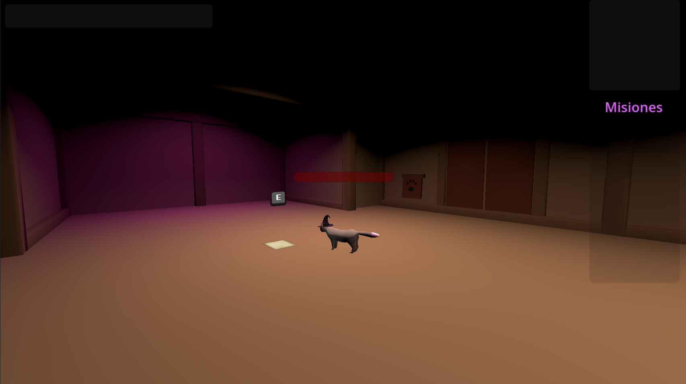
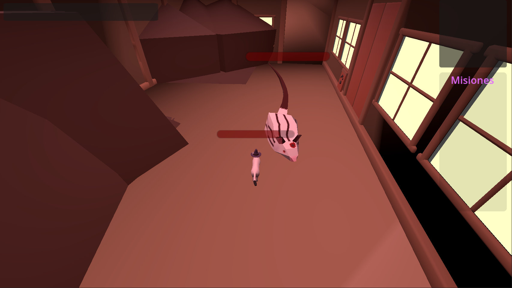

Aventura
AstroKitt
🐈

🐈
🐈
🐈

Descripción
Sos un gato magico que su mision es conseguir algunos materiales para que tu dueña pueda realizar magia, esos objetos son ellos mismo representados en jefes, al derrotarlos se obtiene dicho objeto.
Mecánicas
Sistema de ataques, Sistema de Teletransportacion.
Tecnologías
- Godot 4
- GdScript
- Blender
- Cloude
- Chat-GPT
Duración1 Mes
PlataformaPC
EstadoEn desarrollo
RolLead Dev
Archivos del proyecto
AstroKittGitHub
El código y los recursos de este proyecto están en un repositorio de GitHub, donde podés verlos y descargarlos.
Ver archivos en GitHub